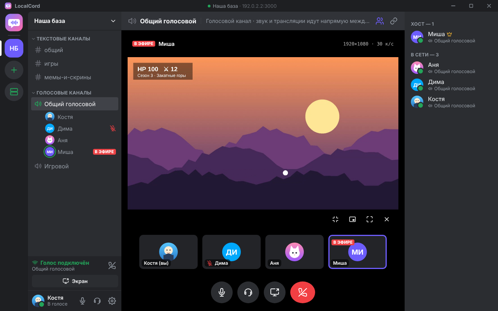
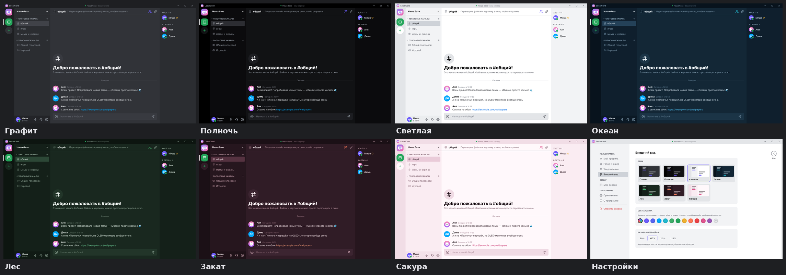
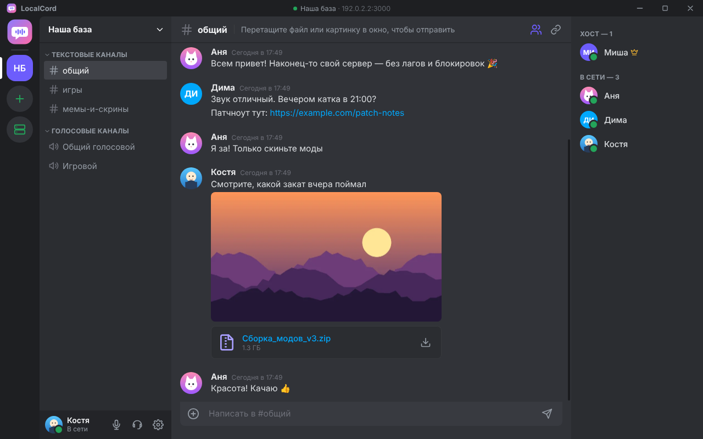
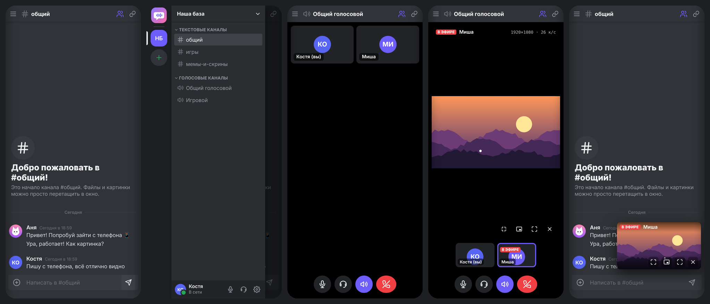

Голос, чат, файлы и демонстрация экрана до 4K. Сервер — компьютер одного из друзей, а не чужой дата-центр: работает в локальной сети и через Radmin VPN, без блокировок и аккаунтов.

Все ставят одно и то же приложение. Установка — пара секунд, права администратора не нужны. При первом запуске — имя и фото.
Кто-то из друзей нажимает «Создать сервер». Сервер работает прямо в программе, пока она открыта или свёрнута в трей.
Сервер сам появляется в списке «Найдено в сети». Если не виден — вставьте адрес, который покажет хост.



Установщик не подписан платным сертификатом, поэтому SmartScreen его не знает. Нажмите «Подробнее» → «Выполнить в любом случае».
Всем, включая хоста, нужно быть в одной виртуальной сети — например Radmin VPN. Хосту стоит один раз нажать «Разрешить» в окне «Пригласить друзей», чтобы брандмауэр Windows пропускал друзей.
Radmin VPN есть только для Windows. Дома в одном Wi-Fi с хостом телефон находит сервер сам. Вне дома нужна VPN-сеть с приложением для Android (например ZeroTier или Tailscale), в которой есть и компьютер хоста — он может быть в Radmin и в такой сети одновременно.
Скачайте файл на телефон и откройте его. Android попросит разрешить установку из браузера или менеджера файлов — разрешите один раз. Новые версии ставятся поверх старой, профиль сохраняется.
Только на компьютере хоста. Голос и видео идут напрямую между участниками и всегда зашифрованы.